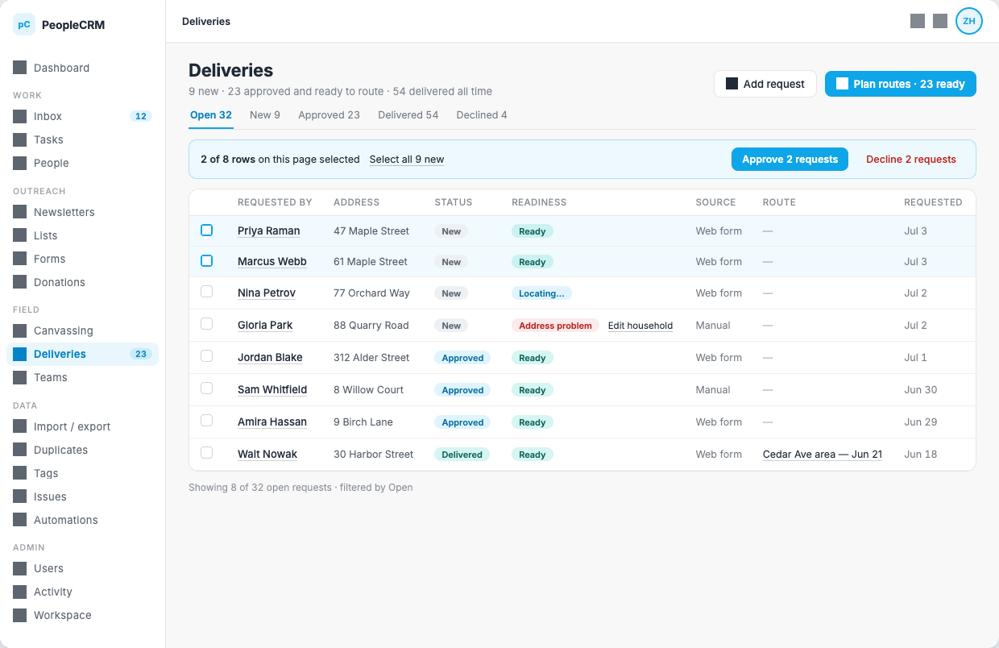
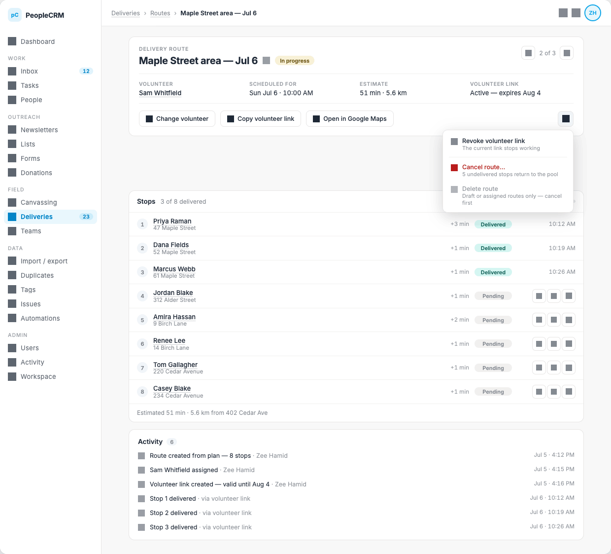
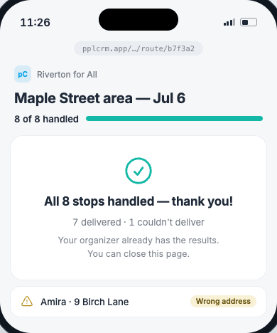
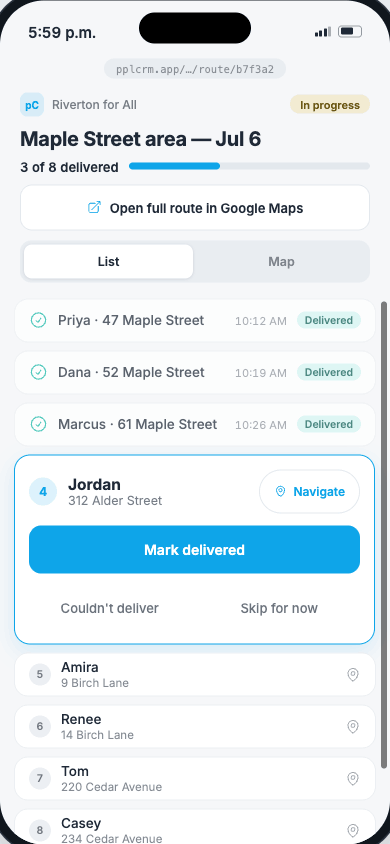
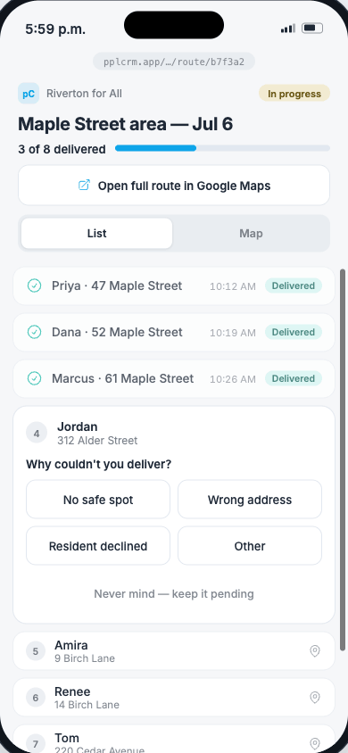

Yard-sign requests → route planning → volunteer delivery · pplCRM · July 5, 2026 Sources:
Yard Sign Routes Mockup.dc.html
·
Volunteer Route Prototype.dc.html
· raw PNG exports in
handoff-yardsigns/img/
1 · Overview
Deliveries lets a campaign collect yard-sign requests, turn the approved ones into optimized driving routes,
and hand each route to a volunteer through a public tokenized link — no volunteer account required. Results
flow back automatically: every delivered or failed stop updates the request record, the route, and the
activity feed in real time.
Personas. The staff organizer works in the
desktop app (sidebar → Field → Deliveries). The volunteer only ever sees the
mobile route page behind their link.
Surface
Route
Audience
Spec
Requests grid
/deliveries
Staff
§4.1
Plan routes
/deliveries/plan
Staff
§4.2
Route detail
/deliveries/routes/:id
Staff
§4.3
Volunteer route page
/r/:token (public)
Volunteer
§4.4–4.5
2 · Data model
DeliveryRequest {
id, personId, householdId // request always belongs to a household
address: string
geo: { lat?, lng?, geocodeStatus: "pending" | "located" | "failed" }
status: "new" | "approved" | "declined" | "delivered"
source: "web_form" | "manual"
requestedAt: timestamp
// NOTE: "routed" is NOT a stored status — it is derived from having
// an active RouteStop. One source of truth; no sync bugs.
}
Route {
id, name // e.g. "Maple Street area — Jul 6", inline-renamable
status: "draft" | "assigned" | "in_progress" | "completed" | "canceled"
volunteerId?, scheduledFor?
startAddress: string // remembered tenant-wide from last plan
estimate: { minutes, km } // recomputed server-side on any reorder/removal
link?: { token, expiresAt, revokedAt? } // capability URL, default 30-day validity
}
RouteStop {
id, routeId, requestId
seq: int // 1-based visit order
legMinutes: int // travel time from previous stop
status: "pending" | "delivered" | "skipped"
reason?: "No safe spot" | "Wrong address" | "Resident declined" | "Other"
actedAt?, actedVia?: "volunteer_link" | "staff"
}
State machines
Request:new → approved → delivered, or new → declined. A
skipped or removed stop returns the request to
approved (back in the
planning pool). Delivered requests keep a link to their route as the paper trail.
Route:draft → assigned → in_progress → completed. The first volunteer action flips assigned → in_progress (no separate "start" step). When every
stop is terminal (delivered/skipped) the route auto-completes. Cancel is
allowed from assigned/in_progress and returns all undelivered stops to the pool; delete is allowed only
for draft/assigned routes — the UI explains this instead of showing a bare disabled item.
Stop:pending → delivered | skipped(reason). Undo restores pending and clears time/reason. Undo must always be available for the most recent action
— mistakes on a phone in the sun are guaranteed.
3 · End-to-end workflow
Intake. Requests arrive from the public web form or manual entry.
Geocoding runs asynchronously; its state is narrated as a Readiness chip (Ready / Locating… / Address problem) — rows are never hidden because of it.
Approve. Staff bulk-select new requests and approve or decline them from
the selection bar (§4.1).
Plan. Staff sets a start address (+ optional driver count), previews
routes — a pure computation that writes nothing — reviews the proposal and leftovers, then commits with
"Create N routes" (§4.2).
Assign & share. On the route detail page staff assigns a volunteer and
copies the volunteer link. First copy mints the token ("Link copied — valid 30 days") (§4.3).
Deliver. The volunteer opens the link on their phone and works one stop at
a time: mark delivered, report a failure with a reason, or defer the house to the end of the route
(§4.4–4.5). Each action syncs immediately and appears in the route's activity feed attributed to "via
volunteer link".
Close out. When all stops are terminal the route auto-completes and the
volunteer sees a thank-you summary. Skipped requests are already back in the pool for the next batch. The
link keeps working read-only until it expires.
4 · Screen specifications
4.1 Requests grid —
/deliveries

Fig. 1 — Requests grid, bulk-selection state. Grey squares are standard icon slots (heroicons).
Columns: checkbox · Requested by (person link) · Address · Status chip
(New/Approved/Delivered/Declined) · Readiness chip · Source (Web form/Manual) · Route (link or "—") ·
Requested (date).
Tabs with live counts: Open 32 · New 9 · Approved 23 · Delivered 54 ·
Declined 4. "Open" = new + approved.
Bulk selection bar appears when ≥1 row is checked. It narrates scale ("2
of 8 rows on this page selected") and offers the next scale up ("Select all 9 new"). Actions repeat the
number: "Approve 2 requests"; "Decline 2 requests" sits last, in error color, transparent background.
Readiness narrates geocode state instead of hiding rows. "Address problem"
renders an inline "Edit household" link; saving the household re-triggers geocoding.
"Plan routes · 23 ready" (primary) carries the live eligible count and is
never disabled — at 0 it lands on the plan page's guided empty state. Secondary "Add request" opens manual
entry.
Route column is derived from an active stop, not stored. Delivered rows
keep the route link.
Inputs: Start address (autocomplete, prefilled from the tenant's last
plan, saved again on commit; shows a "Located" chip once geocoded). Volunteers available — optional; blank
= as many routes as needed, a number balances stops across that many drivers.
Advanced stays collapsed and summarizes its defaults inline: 60 min per
driver · no sign cap · 5 min per stop · 30 km/h average · no return trip.
Preview is pure. "Preview routes" computes a proposal and writes nothing;
the page says so twice ("Preview doesn't save anything", "Nothing is saved until you create routes").
Eligibility narration: "Previewing 23 of 32 open requests. 9 can't be
routed yet:" with each count a deep link to the pre-filtered grid (3 waiting for location · 1 address
problem · 5 not approved). Guide, don't error. 0 eligible renders this as the page's empty state, not a
toast.
Proposal cards: one per route — kicker (ROUTE 1), summary (8 stops · 51
min · 5.6 km), ordered stop list with per-leg travel time (+3 min).
Leftovers are always explained, with an exit. Two classes:
Didn't fit this batch (capacity; "Stays approved — first in line when you plan another batch")
and Couldn't fit (per-request reason in user terms, e.g. "Isolated — the nearest other stop is 12
km away"). Every leftover row links to its request, where staff can mark it delivered manually.
Commit: "Create 3 routes" repeats the number; success toasts "3 routes
created" and lands on the routes grid. "Start over" clears the proposal.
4.3 Route detail —
/deliveries/routes/:id

Fig. 3 — Route detail, in progress, overflow menu open.
Header card: eyebrow names the type ("Delivery route"), the real route
name is the title (inline rename via pencil), status chip beside it, pager carries grid context ("2 of
3"). Fields: Volunteer (person link) · Scheduled for · Estimate · Volunteer link state ("Active — expires
Aug 4").
Actions row: Change volunteer · Copy volunteer link (first click mints the
token and copies — "Link copied — valid 30 days") · Open in Google Maps. Overflow (⋯):
Revoke volunteer link ("The current link stops working"), Cancel route… in error color
("5 undelivered stops return to the pool"), Delete route greyed with its unmet condition spelled
out ("Draft or assigned routes only — cancel first"). Destructive verbs always name their consequences.
Stops card: header shows "3 of 8 delivered" + progress bar. Each row: seq
bubble · person link + address · leg time · status chip · delivered time, or for pending stops ↑ ↓ reorder
buttons and a ⋯ menu (mark delivered / couldn't deliver / remove from route — removal returns the request
to the pool). Reorder recomputes legs and the estimate server-side and
flashes the changed row. Footer repeats the estimate and start point.
Activity feed is mandatory and tells one coherent story: created from plan
→ volunteer assigned → link created → stop-by-stop results. Public actions attribute to "via volunteer
link", never a fake user.
Fig. 4a — Mid-route: delivered rows, just-delivered with Undo, active stop card, inline reason picker,
pending queue.

Fig. 4b — Done state: auto-completed summary plus exception rows.
Data minimization: the page shows first name + address only. No
constituent email, phone, or notes ever reach this public page. Header shows the campaign name and
progress ("3 of 8 delivered" + bar).
One next action per stop; all tap targets ≥44px. The first action flips
the route to in_progress — no separate "start" step.
Failure reasons are inline, not a modal: No safe spot · Wrong address ·
Resident declined · Other, plus "Never mind — keep it pending". A skipped house goes back to the
organizer's pool automatically, and the page says so in plain words.
Undo is offered on the just-actioned row (teal "Delivered just now" /
amber skipped) and restores pending.
Done state: when every stop is terminal the route auto-completes: "All 8
stops handled — thank you!", counts, "Your organizer already has the results." Exceptions stay listed with
their reason chips. The link keeps working read-only until expiry; staff can mint a new one any time.
Navigation: "Open full route in Google Maps" (all stops as a directions
URL) in the header; per-stop "Navigate" (single-destination directions URL).
4.5 Volunteer page — interactive behavior (from the working prototype)

Fig. 5a — List: active stop card with the three actions.

Fig. 5b — "Couldn't deliver" swaps the card for the reason picker.
Stop → delivered with timestamp; row becomes teal "Delivered just now" with an Undo pill; the next
pending stop becomes the active card; progress bar animates.
Couldn't deliver
The active card swaps to the inline reason picker (2×2 grid of the 4 reasons + "Never mind"). Picking
a reason marks the stop skipped (amber row, reason chip, Undo) and advances.
Skip for now
Defers the house: the stop moves to the end of the route, all seq numbers recompute, and the moved row
notes "moved to the end of your route". Not a failure — status stays pending.
Undo
Shown on the most recently actioned row only; restores pending and clears time/reason.
List / Map toggle
Segmented control under the header. Map shows numbered pins colored by status (teal delivered, amber
skipped, primary = next, grey pending), a dashed route line in visit order, and a stop card for the
selected pin.
Tap a pin
Selects that stop. Pending stops get the full action set in the card (out-of-order delivery is
allowed); delivered/skipped stops show their status chip, time, and Undo when eligible.
Progress
Label counts delivered ("3 of 8 delivered"); the bar fills by handled (delivered + skipped). At
completion the label flips to "8 of 8 handled" and the bar turns teal.
Status chip
Header chip mirrors route state: Not started (grey) → In progress (amber) → Completed (teal).
5 · Business rules & edge cases
Geocode failures never hide data — they are narrated on the row with a repair path (Edit household → save
re-triggers geocoding).
Skipping (with reason) or removing a stop returns its request to
approved immediately;
the next plan preview picks it up.
Route auto-completes on the last terminal stop — the volunteer never has to "submit". Undoing from the
done state reopens the route to in_progress.
Cancel route returns all undelivered stops to the pool and revokes nothing retroactively: delivered stops
keep their record. Revoke link takes effect immediately (server-side token check on every request).
Volunteer actions are server-authoritative: the page posts each action, renders optimistically, and
retries on failure. Concurrent staff edits (reorder, removal) surface on the volunteer's next sync.
Out-of-order delivery is allowed everywhere; seq is a suggestion, not a lock.
Accessibility: ≥44px targets on mobile, visible focus rings,
prefers-reduced-motion
respected.
6 · API sketch
// Staff (authenticated)
GET /api/deliveries/requests?status=open|new|approved|delivered|declined
POST /api/deliveries/requests // manual entry
POST /api/deliveries/requests/bulk // { ids[], action: "approve" | "decline" }
POST /api/deliveries/plan/preview // pure; { startAddress, drivers?, advanced? }
// → { routes[], didntFit[], couldntFit[{reason}] }
POST /api/deliveries/plan/commit // same payload → creates routes atomically
GET /api/deliveries/routes/:id
PATCH /api/deliveries/routes/:id // rename, volunteerId, scheduledFor
POST /api/deliveries/routes/:id/stops/reorder // recomputes legs + estimate, returns route
POST /api/deliveries/routes/:id/stops/:sid // { action: "deliver" | "skip" | "remove", reason? }
POST /api/deliveries/routes/:id/link // mint (idempotent while active); DELETE = revoke
POST /api/deliveries/routes/:id/cancel
// Public (token is the only credential — scope: this route, first names + addresses only)
GET /r/:token // { campaignName, routeName, status, stops[] }
POST /r/:token/stops/:sid // { action: "deliver" | "skip" | "defer" | "undo", reason? }
// defer = move to end; server renumbers seq
Rate-limit the public endpoints per token; expire tokens by default after 30 days; log every public action
to the route activity feed as "via volunteer link".
7 · Visual system
Token
Value
Type
Inter · h1 22/700 · card title 15/600 · body 13 · meta 12.5 · label 10.5 caps +.07em · tabular-nums on
all counts
Text / surfaces
#1f2937 on app
#f8f8f8; cards
#ffffff, border
#e7e5e4, radius 12
(16 on mobile cards); muted text = color-mix of text at 50–60%
Primary
#0ea5e9, hover
#0284c7; links
underline with 22%-alpha decoration, hover to primary
Success / delivered
icon #14b8a6; chip
bg #2dd4bf @20%,
text #0b5e54
Warning / skipped
chip bg
#e5c963 @26%, text
#6b5713; icon
#b98a12
Error / destructive
text #b91c1c; bg
#f37373 @12–15%
Info narration
bg #38bdf8 @9% over
white, border @32%, headline text
#0c4a6e
Layout
Sidebar 206px · top bar 52px · content max-width 930–980px centered · chips radius 99 · mobile frame
390×844, hit targets ≥44px
Icons
Heroicons (outline), rendered as CSS mask so they take currentColor; set in
assets/icons/
8 · Acceptance checklist
Bulk bar narrates selection scale and offers "Select all N new"; actions repeat the count.
"Plan routes" button always enabled, count live; 0 eligible lands on a guided empty state.
Preview writes nothing; commit creates all routes atomically and repeats the number.
Every non-routed request after preview has a named reason and a link to act on it.
First "Copy volunteer link" mints the token; revoke invalidates instantly.
Public page exposes first name + address only (verify payload, not just UI).
First volunteer action flips route to in progress; last terminal stop auto-completes it.
Skip-with-reason returns the request to the pool; defer ("Skip for now") renumbers and keeps it pending.
Undo restores pending from either delivered or skipped, including from the done state.
Stop reorder recomputes legs + estimate server-side; UI flashes the moved row.
Activity feed logs every state change with correct attribution ("via volunteer link" for public actions).
All volunteer tap targets ≥44px; focus-visible rings present; reduced motion respected.